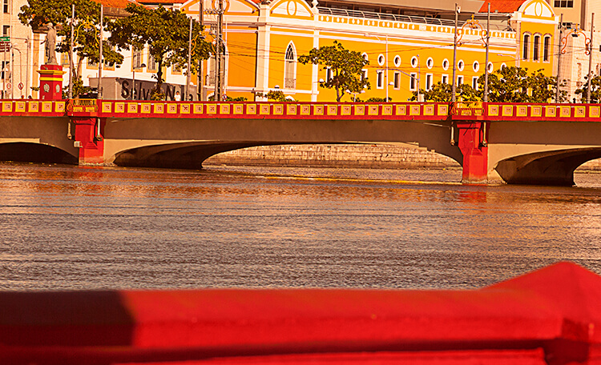

temos alguns pontos turisticos Aqui Recife Antigo Temos A Torre Malakoff

Area Interna Torre Malakoff

A Torre Malakoff, localizada no Recife Antigo, na cidade do Recife, foi batizada com o nome de uma das torres da fortaleza de Sebastopol, durante a Guerra da Criméia.
Ponte Mauricio De Nassau
Recife é chamada por alguns de a “Veneza brasileira”, por conta dos canais que cortam a cidade. A navegação é oferecida por algumas empresas privadas. Existem algumas opções que saem do próprio Marco Zero que lhe leva direto para o Parque das Esculturas Francisco Brennand, que fica do outro lado do rio. Mas, esse parque é uma área mais “abandonada”, falo mais sobre isso no próximo tópico.